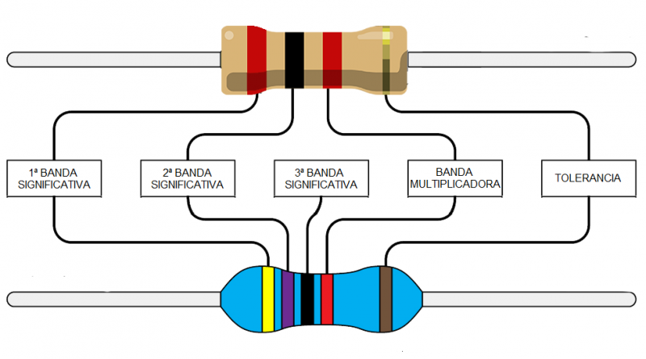
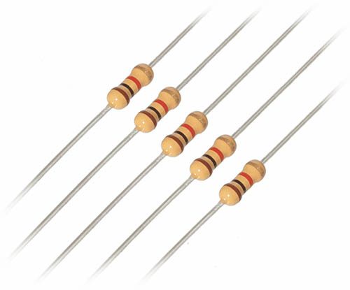
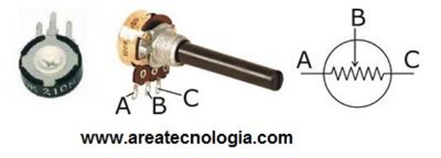
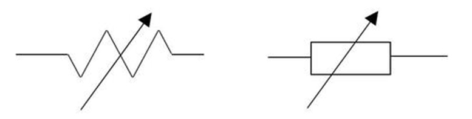
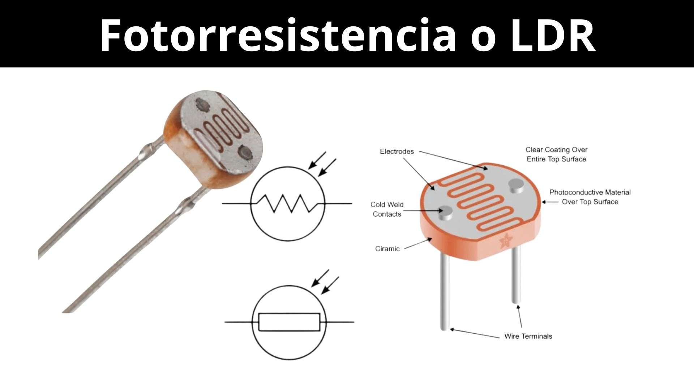
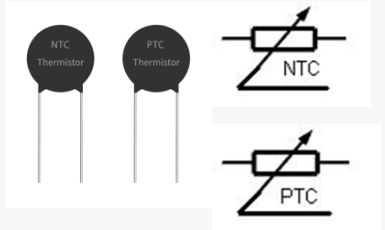
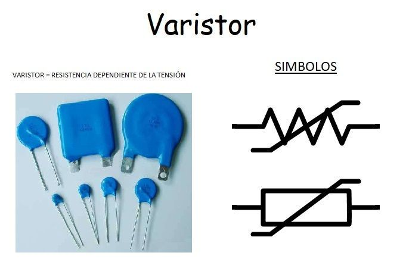

Electrónica Básica: Métodos y Análisis
Objetivo de Aprendizaje: Comprender las bases teóricas y los componentes que se utilizan en la electrónica que sustentan el funcionamiento de los circuitos electrónicos
- Principios Fundamentales de la Electrónica:
La electrónica se basa en el control y manipulación de la electricidad a través de componentes como resistencias, condensadores y transistores, un circuito electrónico es una vía cerrada que permite el flujo de corriente eléctrica, siendo los componentes básicos fundamentales para su funcionamiento, a continuación se abordara los distintos componentes de la electronica:
- La Resistencias Fijas: Mantienen un valor constante.
- Su unidad de medida es el ohmio (Ω), y su valor teórico se establece mediante un código de colores.
- Recuerda que, según la ley de Ohm, una mayor resistencia implica una menor intensidad de corriente, por esta razón, se utilizan para restringir o bloquear el flujo de corriente en ciertas partes de un circuito.
En cuanto al símbolo que se emplea en los circuitos, existen dos variantes diferentes, que son las siguientes:


Como puedes notar, las resistencias presentan bandas de colores (código de colores) que permiten identificar su valor en ohmios (Ω).
- El primer color representa el primer dígito del valor de la resistencia, el segundo color corresponde al segundo dígito, y el tercer color indica cuántos ceros se deben agregar.
- Cada color está vinculado a un número específico, este sistema es conocido como el código de colores para resistencias.
- Por ejemplo, si ves Rojo-Rojo-Rojo, eso equivale a 2200Ω (con dos ceros añadidos).
- Ejercicio:
Supón que tienes una resistencia con el siguiente código de colores: Rojo, Verde, Amarillo.
Identifica los valores:
Rojo: 2
Verde: 5
Amarillo: multiplica por 10,000 (añade 4 ceros)
Calcula el valor total de la resistencia:
Los dos primeros colores nos dan 25 (2 y 5).
El tercer color indica que debemos multiplicar por 10,000.
Operación: 25 × 10,000 = 250,000 ohmios.
R= la resistencia tendrá un valor de 250,000 ohmios.
- Potenciometro o Resistencia Variable: Son resistencias que se pueden ajustar mecánicamente (de forma manual).
- Los valores de la resistencia en un potenciómetro oscilan desde 0Ω (mínimo) hasta un máximo que depende del modelo específico.
- Los potenciómetros cuentan con tres terminales.
- Es importante que al conectar los terminales exteriores (los extremos), el potenciómetro opera como una resistencia fija con un valor igual al máximo que puede alcanzar.
- Al conectar el terminal del medio con uno de los extremos, se permite ajustar la resistencia de manera variable al girar una pequeña perilla.
- A continuación, se presentan dos tipos diferentes que funcionan de la misma manera:

Cualquier símbolo electrónico que tenga una flecha atravesándolo indica que es variable, en este contexto, un potenciómetro o resistencia variable se representaría así:

- La LDR o Resitencia Variable con la Luz: Se trata de una resistencia que ajusta su valor según la intensidad de luz que la afecta.
- Por lo general, su resistencia se reduce al incrementarse la luz sobre ella.
- Estos componentes son frecuentemente empleados como sensores de luz ambiental o fotocélulas que inician un proceso específico dependiendo de la presencia o ausencia de luz.
- Cualquier símbolo que tenga flechas dirigidas hacia el símbolo, significa que cambia al actuar la luz sobre el.

- El Termistor : Son resistencias que modifican su valor según la temperatura que experimentan, existen dos tipos: NTC y PTC.
- NTC: Su resistencia aumenta cuando la temperatura disminuye (comportamiento negativo).
- PTC: Su resistencia aumenta a medida que la temperatura se eleva (comportamiento positivo).

- VDR o Varistor resisrencia Variable según la tensión: Un varistor es un dispositivo electrónico que ajusta su resistencia eléctrica según la tensión aplicada en sus terminales.
- También se le conoce por su abreviatura VDR (Resistencia Dependiente del Voltaje).
- El tipo más común es el varistor de óxido metálico (MOV), un MOV está compuesto por una masa cerámica de granos de óxido de zinc, mezclados con otros óxidos metálicos (como pequeñas cantidades de bismuto, cobalto y manganeso), y se encuentra entre dos placas metálicas (los electrodos).
- Se utiliza frecuentemente para proteger los componentes de un circuito de sobretensiones.

(Electronica Basica Curso de Electronica Basica, 2024)